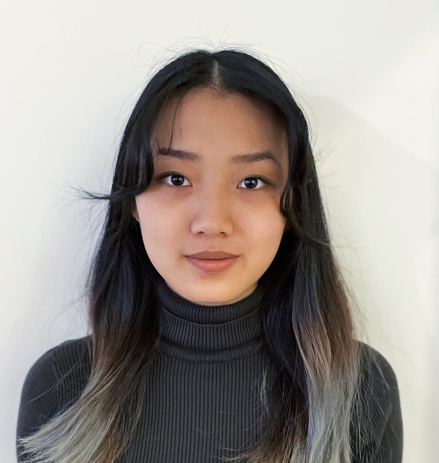

Wenjie Gong
I am a 5th year PhD student in physics at MIT, advised by Prof. Soonwon Choi. I am interested in designing practical protocols for the control and characterization of quantum many-body systems. My PhD work is supported by the Hertz Foundation and the Paul and Daisy Soros Fellowship for New Americans.
Previously, I worked with Dr. Raju Venugopalan at Brookhaven National Laboratory to study spin entanglement in high-energy collisions. I earned my A.B. in physics and mathematics and A.M. in physics from Harvard in 2022. An updated list of my publications can be found on Google scholar.

Selected Publications
Quantum Control
-
Robust Hamiltonian engineering with subensemble control
2026
-
Robust and parallel control of many qubits
Phys.Rev.Res. 8 L032043 · 2026
Quantum Sensing and Benchmarking
Quantum Phenomena in High Energy Physics
-
Observation of ballistic plasma and memory in high-energy gauge theory dynamics
2025
-
Realtime dynamics of hyperon spin correlations from string fragmentation in a deformed four-flavor Schwinger model
Phys.Rev.D 109 116003 · 2024
-
Measurement of Bell-type inequalities and quantum entanglement from Λ-hyperon spin correlations at high energy colliders
Phys.Rev.D 106 L031501 · 2022